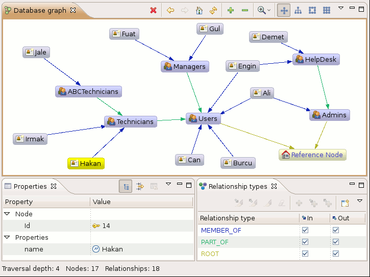

Introduction
What is Neoclipse?
Neoclipse is a tool that provides a graphical view of Neo4j database contents.
In the graph view, it is possible to edit properties of both nodes and relationships. There are also some ways to decorate the nodes and relationship representations.
How to use Neoclipse?
You can run Neoclipse both as a standalone product or as a plug-in for Eclipse IDE.
For details on running Neoclipse, please refer to the basic tutorial.
